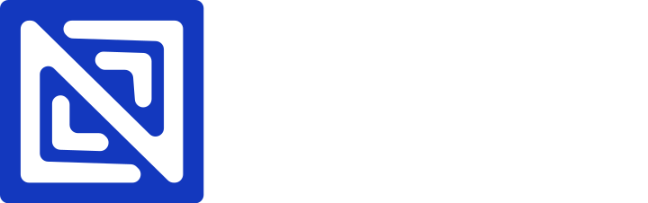

 Social Impact Monthly Newsletter October at NerdzFactory Company October 2026 | |||||||||
From digital skills training to safer digital spaces, our work continues to create opportunities for people and communities to learn, grow, and thrive. In this edition, we share updates from the Design & Digital Marketing School and SafeOnline, alongside a look at initiatives in the pipeline and what's coming next. We hope these updates give you a closer look at the work we're doing and the opportunities ahead for continued engagement and collaboration. | |||||||||
On the Ground Design & Digital Marketing School (DDM): Cohort 3 BeginsThe Design & Digital Marketing School Lagos Programme, delivered in partnership with the Lagos State Employment Trust Fund (LSETF) and the German Development Cooperation (GIZ), is training 100 Lagos State youths aged 18 to 35 in digital marketing and graphic design. Now in its third cohort, the programme equips young people with practical skills to pursue employment and other career opportunities in the digital economy. Building on the progress of previous cohorts, the current training continues NerdzFactory’s work to expand access to digital skills and support young people on their career journeys. | |||||||||
 SafeOnline: Young People Teaching Young PeopleSafeOnline 2026 is putting young people at the centre of digital safety education. Through its Youth Track, selected young people are trained and supported by NerdzFactory to become peer educators and community trainers, leading sessions for teenagers aged 13 to 17 in schools and community spaces. The programme goes beyond online safety awareness. Alongside learning how to recognise digital risks and develop healthier screen-time habits, teenagers are introduced to artificial intelligence (AI), how it works, and how to engage with it responsibly. Through peer-led AI Literacy Circles, they can explore these topics, share experiences and encourage one another to make informed choices online. By equipping young people to teach their peers, SafeOnline creates a relatable way to build digital safety and AI literacy while encouraging healthier digital habits that extend beyond individual training sessions. | |||||||||
NerdzFactory by the NumbersDDM
SafeOnline
| |||||||||
What’s Ahead Strengthening Teachers’ Digital LiteracyThrough our partnership with the Raspberry Pi Foundation and Google DeepMind on the Experience AI programme, NerdzFactory is expanding its work to help teachers build the digital skills they need in today’s classrooms. The training will reach 4,000 teachers across Lagos, Ogun, Oyo, Ondo and Ekiti States, covering essential digital skills and introducing them to artificial intelligence (AI) and how it can be used in learning. This will also include 500 Special Needs teachers, who will receive training tailored to their classroom needs, alongside assistive learning resources to help students with additional learning needs participate more fully in digital education. | |||||||||
Preparing Young Women for Digital CareersNerdzFactory is preparing to deliver digital skills and employability training for young women aged 18 to 35 under the Technology Talent Services (TTS) Nigeria programme. The training will focus on Digital Marketing and Data Analytics, combining practical exercises and projects with workplace and employability skills. Delivery is planned across Lagos and Ogun States, helping participants build relevant competencies and prepare for opportunities in Nigeria’s growing business process outsourcing (BPO) and digital services sectors. Through this work, NerdzFactory aims to help young women move beyond learning new skills to becoming better prepared for employment. | |||||||||
 Your Screen, Your Story: Promoting Safer Digital ExperiencesThrough MTN Nigeria’s Help Children Be Children (HCBC) initiative, NerdzFactory is preparing for Your Screen, Your Story, a virtual event focused on helping children and young people navigate the digital world safely and responsibly. The 2-hour interactive event will bring together young people, parents, guardians and educators to explore topics including cyberbullying, artificial intelligence, online privacy and digital wellbeing. The programme will feature expert discussions, interactive sessions and practical guidance for building safer online habits.
| |||||||||
In the News The Nation: NerdzFactory and Meta Equip Parents and Guardians with Digital ToolsThe Nation featured NerdzFactory Company and Meta’s work to help parents and guardians build the knowledge and confidence to support safer online experiences for children. The coverage highlights our commitment to digital safety education and helping families navigate the challenges children face online.
| |||||||||
Staying ConnectedThank you for being part of our journey. We value the relationships, shared experiences, and opportunities to create meaningful change together. As we continue our work across digital skills, education, and social innovation, we look forward to strengthening existing partnerships and exploring new ways to collaborate. Here's to making more progress together.
| |||||||||
| The NerdzFactory Social Impact Newsletter is a monthly look into the programmes, people and communities at the centre of NerdzFactory Company’s work. www.nerdzfactory.co |